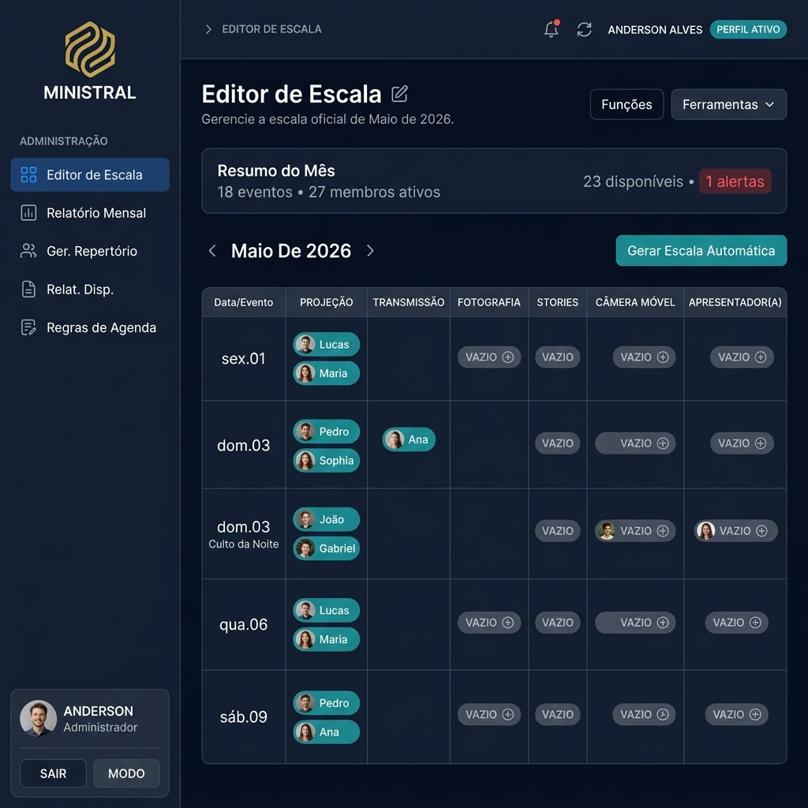

O sistema completo que transforma a gestão do seu ministério. Escalas inteligentes, comunicação integrada, repertório sincronizado e IA avançada — tudo em uma plataforma bonita e poderosa.
Ferramentas profissionais pensadas para quem leva a sério a organização do servir.
Monte escalas em minutos com detecção automática de conflitos, distribuição justa e sugestões inteligentes por IA.
Membros informam suas disponibilidades direto pelo celular. Janelas configuráveis e notas personalizadas.
Trocas de escala com um clique. O membro solicita, outro assume — sem confusão, sem ligações.
Integração direta com Spotify e YouTube. Compartilhe cifras, links e organize o setlist de cada evento.
Relatórios mensais detalhados, ranking gamificado com GloryCoins e métricas de engajamento da equipe.
Assistente de IA que analisa padrões, sugere escalas otimizadas e oferece insights sobre seu ministério.
Notificações automáticas de escalas, lembretes e comunicados enviados diretamente no WhatsApp de cada membro.
Sincronização bidirecional das suas escalas e eventos direto com a agenda do Google Calendar de forma fácil.
Mantenha sua equipe informada com um mural de avisos dedicado e nunca esqueça os aniversariantes do mês.
O editor visual mais completo do mercado. Arraste, edite e publique escalas com suporte a múltiplas funções, conflitos entre ministérios e exportação em PDF profissional com a logo da sua igreja.

Login rápido, interface intuitiva e instalação como app no celular (PWA). Tema escuro e claro, push notifications em tempo real e suporte a múltiplos ministérios na mesma conta.
Comece gratuitamente. Evolua quando estiver pronto.
Histórias reais de ministérios que transformaram sua organização.
"Antes do Ministral, eu perdia horas no WhatsApp montando escalas. Agora faço em minutos e todos já recebem automaticamente. Revolucionou nosso ministério."
"A integração com Spotify mudou completamente como organizamos o repertório. O ranking gamificado engajou toda a equipe de uma forma que nunca imaginei."
"O sistema de trocas eliminou 100% dos conflitos de escala. Os membros resolvem tudo pelo app sem precisar me acionar. Nota 10!"
Não! O Ministral funciona 100% no navegador e pode ser instalado como aplicativo (PWA) direto pelo celular ou computador, sem precisar de loja de apps. Basta acessar e instalar.
Sim! Mídia, Louvor, Infantil, Recepção, Diaconia — qualquer ministério que precisa de organização de escalas. As funções e roles são 100% personalizáveis.
No plano Pro você gerencia até 3 ministérios, e no Enterprise são ilimitados. Cada membro pode participar de múltiplos ministérios e o sistema detecta conflitos automaticamente.
Você tem 30 dias gratuitos com acesso às funcionalidades básicas do sistema. Sem cartão de crédito. Ao final, escolha o plano que melhor se encaixa na sua necessidade.
Absolutamente. Utilizamos Supabase com Row Level Security (RLS) para garantir que cada organização só acessa seus próprios dados. Criptografia em trânsito e em repouso.
Sim! Cada organização tem sua própria identidade visual no sistema. Você pode fazer upload da logo da sua igreja, e ela aparecerá no menu, nos PDFs de escala e na tela de login.
Comece agora gratuitamente. Sem cartão de crédito. Configure em menos de 5 minutos.